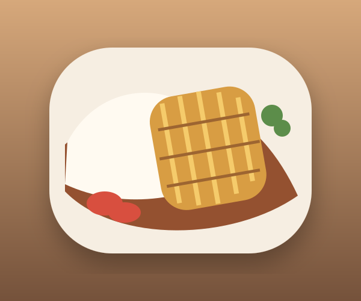

What are we cooking?
Plan
M
This week
July 20–26
Today
Wednesday, July 22
2 dishes planned

Miso Salmon Bowl
Dinner · 25 min

Chicken Katsu Curry
Dinner · 45 min

Suggestion · not planned
Lemon Garlic Linguine
Made 5 times · 30 min
2 captures need a quick look
Help MyMenu place them right.